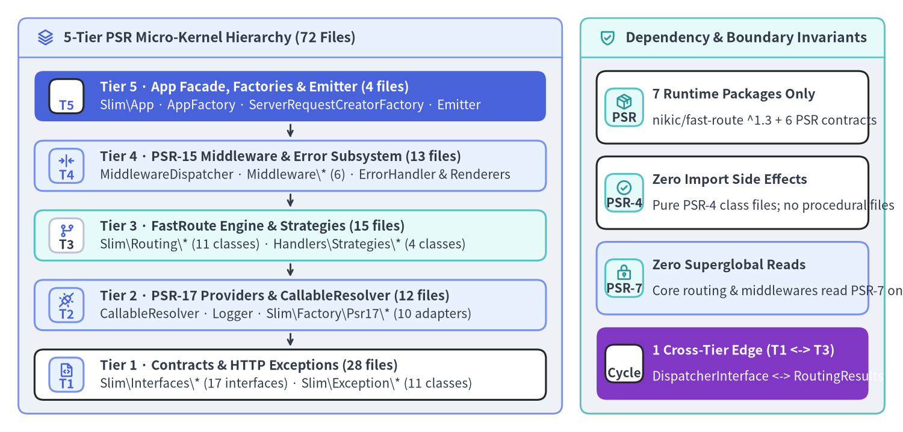
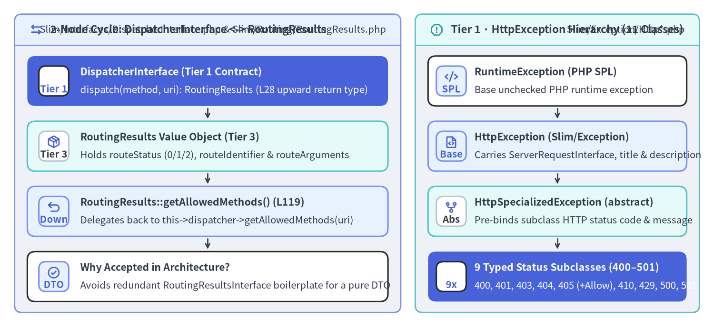

5-Tier Module Hierarchy, PSR Contracts & Coupling Analysis
Slim Framework v4.15.3 implements an entire PSR-7 / PSR-15 / PSR-11 HTTP micro-framework across 72 PHP source files (3,149 LOC, 72 classes/interfaces, 311 methods) with a mean file size of just 43.7 LOC. Every source file in Slim/ maps 1-to-1 to a PSR-4 class or interface under "Slim\\": "Slim/" in composer.json, declares declare(strict_types=1); at line 9, and adheres to a 5-Tier Micro-Kernel Package Topology where dependencies flow downward from Slim\App and Slim\Factory\* down to Slim\Interfaces\* and Slim\Exception\*.

Source Code
from drawlib.canvas import save, setup
from drawlib.icons import phosphor
from drawlib.smartarts import CardList, Panel
from drawlib.styles import Colors, Styles
setup(width=196, height=94, dpi=150)
# Left Panel: 5-Tier Downward Dependency Hierarchy
p_dag = Panel(
"5-Tier PSR Micro-Kernel Hierarchy (72 Files)",
"",
style=Styles.Neutral.patch(shape_r=2.0),
header_style=Styles.PrimaryNeutral.patch(shape_line_width=1.2),
text_style=Styles.DarkBold.patch(text_size=11.0),
icon=phosphor.stack,
icon_style=Styles.PrimaryBold,
header_variant="filled",
header_height=8.5,
)
p_dag.draw((4.0, 4.0), width=118.0, height=86.0)
dx, dw, dh = p_dag.get_content_box((4.0, 4.0), width=118.0, height=86.0, padding=(3.5, 3.0))
tiers = CardList(
style=Styles.White,
text_style=Styles.DarkBold.patch(text_size=10.5),
description_style=Styles.Dark.patch(text_size=10.0),
badge_shape="rounded_rect",
badge_style=Styles.PrimaryNeutral,
badge_text_style=Styles.PrimaryBold.patch(text_size=10.0),
icon_style=Styles.PrimaryBold,
direction="vertical",
spacing=2.5,
show_arrows=True,
arrow_style=Styles.DarkBold.patch(line_arrow_head_scale=10, line_width=1.4),
)
tiers.add(
"Tier 5 · App Facade, Factories & Emitter (4 files)",
"Slim\\App · AppFactory · ServerRequestCreatorFactory · Emitter",
badge_text="T5",
icon=phosphor.rocket_launch,
style=Styles.PrimaryFlat,
text_style=Styles.WhiteBold.patch(text_size=10.5),
description_style=Styles.White.patch(text_size=10.0),
badge_style=Styles.White,
badge_text_style=Styles.PrimaryBold.patch(text_size=10.0),
icon_style=Styles.WhiteBold,
)
tiers.add(
"Tier 4 · PSR-15 Middleware & Error Subsystem (13 files)",
"MiddlewareDispatcher · Middleware\\* (6) · ErrorHandler & Renderers",
badge_text="T4",
icon=phosphor.arrows_in_line_horizontal,
style=Styles.PrimaryNeutral,
)
tiers.add(
"Tier 3 · FastRoute Engine & Strategies (15 files)",
"Slim\\Routing\\* (11 classes) · Handlers\\Strategies\\* (4 classes)",
badge_text="T3",
icon=phosphor.git_branch,
style=Styles.SecondaryNeutral,
badge_style=Styles.White.patch(shape_line_color=Colors.Gray4),
badge_text_style=Styles.DarkBold.patch(text_size=10.0),
)
tiers.add(
"Tier 2 · PSR-17 Providers & CallableResolver (12 files)",
"CallableResolver · Logger · Slim\\Factory\\Psr17\\* (10 adapters)",
badge_text="T2",
icon=phosphor.plugs_connected,
style=Styles.PrimaryNeutral,
)
tiers.add(
"Tier 1 · Contracts & HTTP Exceptions (28 files)",
"Slim\\Interfaces\\* (17 interfaces) · Slim\\Exception\\* (11 classes)",
badge_text="T1",
icon=phosphor.file_code,
style=Styles.White,
)
tiers.draw(xy=dx, width=dw, height=dh)
# Right Panel: Architectural Boundaries & Coupling Invariants
p_right = Panel(
"Dependency & Boundary Invariants",
"",
style=Styles.Neutral.patch(shape_r=2.0),
header_style=Styles.SecondaryNeutral.patch(shape_line_width=1.2),
text_style=Styles.DarkBold.patch(text_size=11.0),
icon=phosphor.shield_check,
icon_style=Styles.SecondaryBold,
header_variant="filled",
header_height=8.5,
)
p_right.draw((126.0, 4.0), width=66.0, height=86.0)
rx, rw, rh = p_right.get_content_box((126.0, 4.0), width=66.0, height=86.0, padding=(3.5, 3.0))
notes = CardList(
style=Styles.White,
text_style=Styles.DarkBold.patch(text_size=10.4),
description_style=Styles.Dark.patch(text_size=10.0),
badge_shape="rounded_rect",
badge_style=Styles.SecondaryNeutral,
badge_text_style=Styles.DarkBold.patch(text_size=10.0),
icon_style=Styles.SecondaryBold,
direction="vertical",
spacing=2.8,
)
notes.add(
"7 Runtime Packages Only",
"nikic/fast-route ^1.3 + 6 PSR contracts",
badge_text="PSR",
icon=phosphor.package,
)
notes.add(
"Zero Import Side Effects",
"Pure PSR-4 class files; no procedural files",
badge_text="PSR-4",
icon=phosphor.check_circle,
)
notes.add(
"Zero Superglobal Reads",
"Core routing & middlewares read PSR-7 only",
badge_text="PSR-7",
icon=phosphor.lock_key,
style=Styles.PrimaryNeutral,
)
notes.add(
"1 Cross-Tier Edge (T1 <-> T3)",
"DispatcherInterface <-> RoutingResults",
badge_text="Cycle",
icon=phosphor.arrows_left_right,
style=Styles.AccentFlat,
text_style=Styles.WhiteBold.patch(text_size=10.4),
description_style=Styles.White.patch(text_size=10.0),
badge_style=Styles.White,
badge_text_style=Styles.DarkBold.patch(text_size=10.0),
icon_style=Styles.WhiteBold,
)
notes.draw(xy=rx, width=rw, height=rh)
save()
1. The 5-Tier Package & Namespace Topology
Slim v4.15.3 partitions its 72 source files across 10 PSR-4 sub-namespaces under Slim\. Unlike frameworks that mix routing state, container resolution, and HTTP output inside a monolithic Application class, Slim isolates each responsibility into a dedicated tier with strict downward dependency rules:
| Tier | Architectural Layer | File Count & LOC | Concrete PHP Modules (Slim/) |
Allowed Internal Dependencies |
|---|---|---|---|---|
| Tier 5 | Application Facade, Bootstrap Factories & SAPI Emitter | 4 files (459 LOC) |
Slim/App.php (121 LOC), Slim/ResponseEmitter.php (137 lines / 92 LOC), Slim/Factory/AppFactory.php (160 LOC), Slim/Factory/ServerRequestCreatorFactory.php (86 LOC) |
Tiers 1–4 (orchestrates default object graph assembly and SAPI streaming) |
| Tier 4 | PSR-15 Middleware Stack & Content-Negotiated Error Subsystem | 13 files (935 LOC) |
Slim/MiddlewareDispatcher.php (177 LOC), Slim/Middleware/{Routing,Error,BodyParsing,ContentLength,MethodOverride,OutputBuffering}Middleware.php, Slim/Handlers/ErrorHandler.php (187 LOC), Slim/Error/AbstractErrorRenderer.php, Slim/Error/Renderers/{Html,Json,PlainText,Xml}ErrorRenderer.php |
Tiers 1–3 (Slim\Routing\RouteContext, RoutingResults, Slim\CallableResolver, Slim\Logger, Slim\Interfaces\*, Slim\Exception\*) |
| Tier 3 | FastRoute Routing Engine & Handler Invocation Strategies | 15 files (953 LOC) |
Slim/Routing/{RouteCollectorProxy,RouteCollector,Route,RouteGroup,RouteContext,RouteParser,RouteResolver,RouteRunner,Dispatcher,FastRouteDispatcher,RoutingResults}.php, Slim/Handlers/Strategies/{RequestResponse,RequestResponseArgs,RequestResponseNamedArgs,RequestHandler}.php |
Tiers 1–2 (Slim\MiddlewareDispatcher used by Route/RouteGroup, Slim\Interfaces\*, Slim\Exception\*) + FastRoute\* |
| Tier 2 | PSR-17 Provider Adapters & Container Callable Resolver | 12 files (391 LOC) |
Slim/CallableResolver.php (131 LOC), Slim/Logger.php (33 lines / 18 LOC), Slim/Factory/Psr17/{Psr17FactoryProvider,Psr17Factory,ServerRequestCreator,SlimHttpServerRequestCreator,SlimPsr17Factory,SlimHttpPsr17Factory,NyholmPsr17Factory,GuzzlePsr17Factory,LaminasDiactorosPsr17Factory,HttpSoftPsr17Factory}.php |
Tier 1 (Slim\Interfaces\*) + external PSR-11 / PSR-17 / PSR-3 contracts |
| Tier 1 | Contract Interfaces & HTTP Specialized Exception Hierarchy | 28 files (411 LOC) |
Slim/Interfaces/*Interface.php (17 files), Slim/Exception/HttpException.php, Slim/Exception/HttpSpecializedException.php, Slim/Exception/Http{BadRequest,Unauthorized,Forbidden,NotFound,MethodNotAllowed,Gone,TooManyRequests,InternalServerError,NotImplemented}Exception.php (11 files) |
Leaf contract tier (depends only on Psr\Http\Message\*, Psr\Http\Server\*, Psr\Container\*, and PHP SPL RuntimeException/Throwable, except for DispatcherInterface -> RoutingResults) |
External Composer Boundary (composer.json)
Inspecting composer.json confirms that Slim v4.15.3 ships zero framework bloat—its runtime require block contains only nikic/fast-route (^1.3) and the six official PHP-FIG interface packages:
{
"require": {
"php": "~7.4.0 || ~8.0.0 || ~8.1.0 || ~8.2.0 || ~8.3.0 || ~8.4.0 || ~8.5.0",
"ext-json": "*",
"nikic/fast-route": "^1.3",
"psr/container": "^1.0 || ^2.0",
"psr/http-factory": "^1.1",
"psr/http-message": "^1.1 || ^2.0",
"psr/http-server-handler": "^1.0",
"psr/http-server-middleware": "^1.0",
"psr/log": "^1.1 || ^2.0 || ^3.0"
}
}
[!NOTE] Notice on
App::VERSIONin Upstream Tag4.15.3: InSlim/App.php:46, the class constant readspublic const VERSION = '4.15.1';because upstream commits between4.15.1and4.15.3updated PHP 8.4/8.5 compatibility and test harnesses without bumping the hardcoded constant string.
2. The DispatcherInterface <-> RoutingResults Coupling Analysis
Static AST dependency analysis across all 72 files in Slim/ reveals only one bidirectional cross-tier dependency cycle (circular_dependencies_count = 1 in PNI501): a 2-node reference loop between Slim\Interfaces\DispatcherInterface (Tier 1) and Slim\Routing\RoutingResults (Tier 3).

Source Code
from drawlib.canvas import save, setup
from drawlib.icons import phosphor
from drawlib.smartarts import CardList, Panel
from drawlib.styles import Colors, Styles
setup(width=196, height=90, dpi=150)
# Left Panel: 2-Node Cycle of DispatcherInterface <-> RoutingResults
p_left = Panel(
"2-Node Cycle: DispatcherInterface <-> RoutingResults",
"Slim/Interfaces/DispatcherInterface.php & Slim/Routing/RoutingResults.php",
style=Styles.Neutral.patch(shape_r=2.0),
header_style=Styles.PrimaryNeutral.patch(shape_line_width=1.2),
text_style=Styles.DarkBold.patch(text_size=10.8),
description_style=Styles.Dark.patch(text_size=9.8),
icon=phosphor.arrows_left_right,
icon_style=Styles.PrimaryBold,
header_variant="filled",
header_height=8.5,
)
p_left.draw((4.0, 4.0), width=106.0, height=82.0)
lx, lw, lh = p_left.get_content_box((4.0, 4.0), width=106.0, height=82.0, padding=(3.5, 3.0))
cycle_list = CardList(
style=Styles.White,
text_style=Styles.DarkBold.patch(text_size=10.2),
description_style=Styles.Dark.patch(text_size=9.8),
badge_shape="rounded_rect",
badge_style=Styles.PrimaryNeutral,
badge_text_style=Styles.PrimaryBold.patch(text_size=9.8),
icon_style=Styles.PrimaryBold,
direction="vertical",
spacing=2.6,
show_arrows=True,
arrow_style=Styles.DarkBold.patch(line_arrow_head_scale=10, line_width=1.3),
)
cycle_list.add(
"DispatcherInterface (Tier 1 Contract)",
"dispatch(method, uri): RoutingResults (L28 upward return type)",
badge_text="Tier 1",
icon=phosphor.compass,
style=Styles.PrimaryFlat,
text_style=Styles.WhiteBold.patch(text_size=10.2),
description_style=Styles.White.patch(text_size=9.8),
badge_style=Styles.White,
badge_text_style=Styles.PrimaryBold.patch(text_size=9.8),
icon_style=Styles.WhiteBold,
)
cycle_list.add(
"RoutingResults Value Object (Tier 3)",
"Holds routeStatus (0/1/2), routeIdentifier & routeArguments",
badge_text="Tier 3",
icon=phosphor.package,
style=Styles.SecondaryNeutral,
badge_style=Styles.White.patch(shape_line_color=Colors.Gray4),
badge_text_style=Styles.DarkBold.patch(text_size=9.8),
)
cycle_list.add(
"RoutingResults::getAllowedMethods() (L119)",
"Delegates back to this->dispatcher->getAllowedMethods(uri)",
badge_text="Down",
icon=phosphor.arrow_u_up_left,
style=Styles.PrimaryNeutral,
)
cycle_list.add(
"Why Accepted in Architecture?",
"Avoids redundant RoutingResultsInterface boilerplate for a pure DTO",
badge_text="DTO",
icon=phosphor.check_circle,
)
cycle_list.draw(xy=lx, width=lw, height=lh)
# Right Panel: HttpException & HttpSpecializedException Hierarchy
p_right = Panel(
"Tier 1 · HttpException Hierarchy (11 Classes)",
"Slim/Exception/Http*.php",
style=Styles.Neutral.patch(shape_r=2.0),
header_style=Styles.SecondaryNeutral.patch(shape_line_width=1.2),
text_style=Styles.DarkBold.patch(text_size=10.8),
description_style=Styles.Dark.patch(text_size=9.8),
icon=phosphor.warning_octagon,
icon_style=Styles.SecondaryBold,
header_variant="filled",
header_height=8.5,
)
p_right.draw((114.0, 4.0), width=78.0, height=82.0)
rx, rw, rh = p_right.get_content_box((114.0, 4.0), width=78.0, height=82.0, padding=(3.5, 3.0))
ex_list = CardList(
style=Styles.White,
text_style=Styles.DarkBold.patch(text_size=10.2),
description_style=Styles.Dark.patch(text_size=9.8),
badge_shape="rounded_rect",
badge_style=Styles.PrimaryNeutral,
badge_text_style=Styles.PrimaryBold.patch(text_size=9.8),
icon_style=Styles.PrimaryBold,
direction="vertical",
spacing=2.6,
show_arrows=True,
arrow_style=Styles.DarkBold.patch(line_arrow_head_scale=10, line_width=1.3),
)
ex_list.add(
"RuntimeException (PHP SPL)",
"Base unchecked PHP runtime exception",
badge_text="SPL",
icon=phosphor.code,
)
ex_list.add(
"HttpException (Slim/Exception)",
"Carries ServerRequestInterface, title & description",
badge_text="Base",
icon=phosphor.file_code,
style=Styles.PrimaryNeutral,
)
ex_list.add(
"HttpSpecializedException (abstract)",
"Pre-binds subclass HTTP status code & message",
badge_text="Abs",
icon=phosphor.git_fork,
style=Styles.SecondaryNeutral,
badge_style=Styles.White.patch(shape_line_color=Colors.Gray4),
badge_text_style=Styles.DarkBold.patch(text_size=9.8),
)
ex_list.add(
"9 Typed Status Subclasses (400–501)",
"400, 401, 403, 404, 405 (+Allow), 410, 429, 500, 501",
badge_text="9x",
icon=phosphor.shield_warning,
style=Styles.PrimaryFlat,
text_style=Styles.WhiteBold.patch(text_size=10.2),
description_style=Styles.White.patch(text_size=9.8),
badge_style=Styles.White,
badge_text_style=Styles.PrimaryBold.patch(text_size=9.8),
icon_style=Styles.WhiteBold,
)
ex_list.draw(xy=rx, width=rw, height=rh)
save()
Why Does This Cycle Exist in Source Code?
Let's examine both sides of the edge in Slim/Interfaces/DispatcherInterface.php and Slim/Routing/RoutingResults.php:
- Upward Reference from Tier 1 (
Slim/Interfaces/DispatcherInterface.php:13-28): Unlike every other contract inSlim\Interfaces\*(which returns only primitive types or otherSlim\Interfaces\*/Psr\*interfaces),DispatcherInterfacedoes not have a companionRoutingResultsInterface. Instead, line 13 imports the concreteSlim\Routing\RoutingResultsclass directly:namespace Slim\Interfaces; use Slim\Routing\RoutingResults; interface DispatcherInterface { public function dispatch(string $method, string $uri): RoutingResults; /** @return string[] */ public function getAllowedMethods(string $uri): array; } - Downward Reference from Tier 3 (
Slim/Routing/RoutingResults.php:22-60, 104-107):RoutingResultsis an immutable value object carrying$routeStatus(NOT_FOUND = 0,FOUND = 1,METHOD_NOT_ALLOWED = 2),$routeIdentifier, and$routeArguments. However, computing allowed HTTP methods across all static and variable regex routes is expensive (FastRouteDispatcher::getAllowedMethods()iterates through every method's route table). To avoid computing allowed methods on every200 OKor404 Not Foundrequest,RoutingResults::__construct()stores a back-reference toDispatcherInterface $dispatcherand evaluatesgetAllowedMethods()lazily only when needed (such as on a405 Method Not Allowedresponse):public function getAllowedMethods(): array { return $this->dispatcher->getAllowedMethods($this->uri); }
[!TIP] How Upstream Could Break the Cycle: Introducing a
Slim\Interfaces\RoutingResultsInterface(declaringNOT_FOUND,FOUND,METHOD_NOT_ALLOWED,getRouteStatus(),getRouteIdentifier(),getRouteArguments(), andgetAllowedMethods()) and typingDispatcherInterface::dispatch(): RoutingResultsInterfacewould makeSlim\Interfaces\a 100% pure leaf package with zero imports fromSlim\Routing\.
3. Contract Surface (Slim\Interfaces\*) & HTTP Exceptions (Slim\Exception\*)
Complete Inventory of the 17 Contract Interfaces
Every core collaborator in Slim 4 is swappable via constructor injection on Slim\App::__construct() (Slim/App.php:55-62) or static setters on Slim\Factory\AppFactory (Slim/Factory/AppFactory.php:173-216):
Interface (Slim\Interfaces\*) |
Primary Implementor(s) in Slim\ |
Key Contract Methods |
|---|---|---|
CallableResolverInterface |
Slim\CallableResolver |
resolve($toResolve): callable |
AdvancedCallableResolverInterface |
Slim\CallableResolver |
Extends CallableResolverInterface with resolveRoute($toResolve): callable & resolveMiddleware($toResolve): callable |
MiddlewareDispatcherInterface |
Slim\MiddlewareDispatcher |
seedMiddlewareStack(RequestHandlerInterface $kernel): void, handle(ServerRequestInterface $request): ResponseInterface, add($middleware): self, addMiddleware(MiddlewareInterface $middleware): self |
RouteCollectorProxyInterface |
Slim\Routing\RouteCollectorProxy, Slim\App |
get(), post(), put(), patch(), delete(), options(), any(), map(), group(), redirect(), getBasePath(), setBasePath() |
RouteCollectorInterface |
Slim\Routing\RouteCollector |
map(), group(), getRoutes(), getNamedRoute(), removeNamedRoute(), lookupRoute(), getCacheFile(), setCacheFile() |
RouteGroupInterface |
Slim\Routing\RouteGroup |
collectRoutes(), add(), addMiddleware(), appendMiddlewareToDispatcher(MiddlewareDispatcher $dispatcher), getPattern() |
RouteInterface |
Slim\Routing\Route |
prepare(array $arguments), run(ServerRequestInterface $request), getInvocationStrategy(), setInvocationStrategy(), getMethods(), getPattern(), getName() |
RouteParserInterface |
Slim\Routing\RouteParser |
relativeUrlFor(string $routeName, array $data = [], array $queryParams = []), urlFor(...), fullUrlFor(UriInterface $uri, ...) |
RouteResolverInterface |
Slim\Routing\RouteResolver |
computeRoutingResults(string $uri, string $method): RoutingResults, resolveRoute(string $identifier): RouteInterface |
DispatcherInterface |
Slim\Routing\Dispatcher |
dispatch(string $method, string $uri): RoutingResults, getAllowedMethods(string $uri): array |
InvocationStrategyInterface |
RequestResponse, RequestResponseArgs, RequestResponseNamedArgs |
__invoke(callable $callable, ServerRequestInterface $request, ResponseInterface $response, array $routeArguments): ResponseInterface |
RequestHandlerInvocationStrategyInterface |
Slim\Handlers\Strategies\RequestHandler |
Marker sub-interface extending InvocationStrategyInterface for PSR-15 RequestHandlerInterface route callables |
ErrorHandlerInterface |
Slim\Handlers\ErrorHandler |
__invoke(ServerRequestInterface $request, Throwable $exception, bool $displayErrorDetails, bool $logErrors, bool $logErrorDetails): ResponseInterface |
ErrorRendererInterface |
AbstractErrorRenderer (Html, Json, PlainText, Xml) |
__invoke(Throwable $exception, bool $displayErrorDetails): string |
Psr17FactoryProviderInterface |
Slim\Factory\Psr17\Psr17FactoryProvider |
getFactories(): array, setFactories(array $factories): void, addFactory(string $factory): void |
Psr17FactoryInterface |
Slim\Factory\Psr17\Psr17Factory (and 6 subclasses) |
getResponseFactory(), getStreamFactory(), getServerRequestCreator(), isResponseFactoryAvailable(), isStreamFactoryAvailable(), isServerRequestCreatorAvailable() |
ServerRequestCreatorInterface |
ServerRequestCreator, SlimHttpServerRequestCreator |
createServerRequestFromGlobals(): ServerRequestInterface |
Why HttpException Carries $request (Slim/Exception/HttpException.php:23-42)
When RoutingMiddleware::performRouting() (Slim/Middleware/RoutingMiddleware.php:57-86) enriches $request with RouteContext::ROUTE_PARSER and RouteContext::ROUTING_RESULTS and then encounters RoutingResults::NOT_FOUND or RoutingResults::METHOD_NOT_ALLOWED, it throws new HttpNotFoundException($request) or new HttpMethodNotAllowedException($request). Because PSR-7 ServerRequestInterface instances are immutable, any $request->withAttribute(...) modifications made inside RoutingMiddleware before the exception was thrown would be lost when stack unwinding returns to ErrorMiddleware::process($request, $handler) (Slim/Middleware/ErrorMiddleware.php:74-81)—which only holds the outer $request reference!
Storing $this->request = $request inside HttpException::__construct() (Slim/Exception/HttpException.php:29-37) allows ErrorMiddleware::handleException() (Slim/Middleware/ErrorMiddleware.php:85-87) to recover the most recent, attribute-enriched request:
// Slim/Middleware/ErrorMiddleware.php:83-87
public function handleException(ServerRequestInterface $request, Throwable $exception): ResponseInterface
{
if ($exception instanceof HttpException) {
$request = $exception->getRequest();
}
Continue to Chapter 2: AppFactory & Psr17FactoryProvider Internals to trace how Slim auto-discovers PSR-17 implementations and wires the default Slim\App object graph.